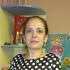

Дошкольное отделение гимназии № 1505
В 2015 году 45% первоклассников Гимназии № 1505 пришли из дошкольного отделения.
- Большая Черкизовская улица, 8
- 2-я Пугачёвская улица, 12
- 2-я Пугачёвская улица, 12с1
- 2-я Пугачёвская улица, 3
- Большая Черкизовская улица, 24Б
- Большая Черкизовская улица, 32А
Воспитатели
Воспитатели, которых чаще всего благодарят родители (отзывы и профили сотрудников взяты с официального сайта школы):|
Воспитатель
Вавилова Лилия Викторовна
10 благодарностей |
Воспитатель
Бембетова Марина Александровна
4 благодарности |
 Воспитатель
Елизарова Марина Ивановна
Воспитатель
Елизарова Марина Ивановна
4 благодарности |
Физ. рук.
Тарасова Ольга Сергеевна
3 благодарности |
|
Старший воспитатель
Алексеева Наталья Борисовна
3 благодарности |
Старший воспитатель
Москалева Татьяна Егоровна
2 благодарности |
Воспитатель
Навроцкая Екатерина Анатольевна
2 благодарности |

Воспитатель
Догонова Марина Николаевна
1 благодарность |
|
Старший воспитатель
Журанкова Вера Владимировна
1 благодарность |
Старший воспитатель
Гришакова Татьяна Васильевна
1 благодарность |
Муз. рук.
Грот Ольга Эдуардовна
1 благодарность |
Муз. рук.
Горячева Светлана Владимировна
1 благодарность |
|
Воспитатель
Григолая Марина Сократовна
1 благодарность |
Отзывы
Данные собраны c официального сайта школы и через форму для отзывов.
Мой сын посещает детский сад 888/2 (подразделение Пугачёвская, 3), ходит в подготовительную группу. Наш воспитатель Вавилова Лилия Викторовна - Воспитатель с большой буквы!!!, с огромным стажем и опытом работы с детьми (больше 20 лет). Мы с ней уже 4 года и сейчас самое время подводить итоги. Лилия Викторовна научила наших детей всему - начиная с того, как правильно держать ложку и заканчивая полной подготовкой к школе. Она очень внимательна к детям, находит подход к каждому ребёнку (и к каждому родителю). Каждый день проводит различные занятия (математика, письмо, рисование, лепка и т.д.), а результаты мы можем контролировать сами. Если у ребёнка есть какие-нибудь пробелы или что-нибудь не получается, она обязательно обратит внимание родителей на это и подскажет, как и что исправить и над чем поработать дополнительно дома. Осенью мы все пошли на подготовительные занятия в школу и учителя говорят, что наши дети выделяются - и по знаниям, и по дисциплине - им уже можно было всем идти в 1 класс! И в этом полностью заслуга Лилии Викторовны!!!
Помимо стандартных минимальных знаний, она даёт много дополнительной информации (откуда берётся хлеб, много интересного о Москве, даже изучали картины известных русских художников), благодаря Лилии Викторовне наши дети развиты многосторонне. По вечерам они в основном играют не в игрушки, а в настольные игры большими группами, собирают вместе Лего или пазлы, и это благодаря нашему воспитателю, которая с малых лет привила интерес.
Особое внимание хочу обратить на спортивные занятия, потому что в нашем саду до недавнего времени не было физкультурного работника, и все занятия проводила она сама. Она научила всех хорошо прыгать на скакалке, владеть мячом (футбол, баскетбол), в шашки дети играют с 4-х лет. Наши дети выигрывали все спортивные соревнования внутри гимназии (из 6 садов) и по итогам ездили на все межрайонные соревнования, и между прочим занимали вполне достойные места! И это - тоже заслуга Лилии Викторовны!!!
Для Лилии Викторовны детский сад и дети - это не работа, а смысл жизни! Она всю себя посвящает им, и знает не только кто на какие дополнительные занятия ходит, но и расписание у каждого ребёнка. Дети делятся с ней всем и многие считают её своей "второй мамой". Лилия Викторовна сдружила не только всех детей, но и родителей. У нас очень сплочённый и дружный коллектив, мы вместе общаемся и дружим вне садика, и сейчас почти всей группой собираемся идти в один класс!
Лилия Викторовна, спасибо Вам за Ваше терпение и любовь, и за всё, что Вы делали для нас и наших детей на протяжении всех 4-х лет!!!
Ещё хотелось бы поблагодарить нашего старшего воспитателя Гришакову Татьяну Васильевну за её отзывчивость и понимание! Она всегда готова выслушать, подсказать, помочь, пойти на встречу родителям в их маленьких капризах. Она никогда не остаётся безучастной и всю себя посвящает детскому саду! Именно таким и должен быть старший воспитатель!!!
Помимо стандартных минимальных знаний, она даёт много дополнительной информации (откуда берётся хлеб, много интересного о Москве, даже изучали картины известных русских художников), благодаря Лилии Викторовне наши дети развиты многосторонне. По вечерам они в основном играют не в игрушки, а в настольные игры большими группами, собирают вместе Лего или пазлы, и это благодаря нашему воспитателю, которая с малых лет привила интерес.
Особое внимание хочу обратить на спортивные занятия, потому что в нашем саду до недавнего времени не было физкультурного работника, и все занятия проводила она сама. Она научила всех хорошо прыгать на скакалке, владеть мячом (футбол, баскетбол), в шашки дети играют с 4-х лет. Наши дети выигрывали все спортивные соревнования внутри гимназии (из 6 садов) и по итогам ездили на все межрайонные соревнования, и между прочим занимали вполне достойные места! И это - тоже заслуга Лилии Викторовны!!!
Для Лилии Викторовны детский сад и дети - это не работа, а смысл жизни! Она всю себя посвящает им, и знает не только кто на какие дополнительные занятия ходит, но и расписание у каждого ребёнка. Дети делятся с ней всем и многие считают её своей "второй мамой". Лилия Викторовна сдружила не только всех детей, но и родителей. У нас очень сплочённый и дружный коллектив, мы вместе общаемся и дружим вне садика, и сейчас почти всей группой собираемся идти в один класс!
Лилия Викторовна, спасибо Вам за Ваше терпение и любовь, и за всё, что Вы делали для нас и наших детей на протяжении всех 4-х лет!!!
Ещё хотелось бы поблагодарить нашего старшего воспитателя Гришакову Татьяну Васильевну за её отзывчивость и понимание! Она всегда готова выслушать, подсказать, помочь, пойти на встречу родителям в их маленьких капризах. Она никогда не остаётся безучастной и всю себя посвящает детскому саду! Именно таким и должен быть старший воспитатель!!!
Мой ребёнок посещает входящий в комплекс ГБУ 1550 детский садик 2670 (старшая группа). Хочу поблагодарить весь коллектив садика и особенно наших воспитателей Марию Валерьевну и Екатерину Владимировну. Это увлечённые, любящие детей педагоги. Ребёнок ходит в садик с удовольствиемю. И особое спасибо за прекрасный утренник к 8 Марта. Сколько было чудесных песен (благодарность музыкальному работнику Ольге Эдуардовне), веселых конкурсов! Понравилось и детям и родителям!
Хочу от себя и от нашей семьи выразить огромную благодарность всему коллективу детского сада (Черкизовская, 8), а также поздравить их с наступающим праздником 8 марта. Надеюсь, поздравление, написанное так рано, успеет дойти до адресата.
Прежде всего хочется отметить замечательное отношение к детям со стороны сотрудников сада. При этом невозможно не отметить воспитателей Группы №4 Марину Сократовну, Марину Николаевну и помощницу Светлану Васильевну. Спасибо им огромное за то, что они не просто смотрят за детьми, но также занимаются их развитием. Сын всегда с удовольствием идёт в группу и иногда его нужно даже упрашивать идти домой.
Думаю, что не только нам, но и всем родителям очень нравятся праздники и открытые мероприятия в группе. Заметно, что мой ребенок развивается, что им занимаются и он в ответ проявляет всяческий интерес к тому, что происходит в саду.
Нельзя не отметить также грамотное руководство старшего воспитателя Журанковой Веры Владимировны. Она всегда внимательна, отзывчива и готова помочь советом. А ее участие во всех родительских собраниях уже давно стало источником интересной и полезной информации для воспитания сына. Большое спасибо ей за это от группы №4.
Также огромное спасибо медицинскому работнику сада Ольге Александровне за своевременную и исчерпывающую информацию по поводу того, что нужно, и что не нужно делать с ребенком в рамках профилактики заболеваний. Нам это уже не раз помогало.
Мы у себя в семье уже давно пришли к единому мнению: нам очень повезло, что мы попали именно в этот сад и именно в эту группу. Думаю, что такое наше мнение, и мнение других родителей может быть лучшей характеристикой и результатом работы этого замечательного коллектива.
Огромное им спасибо и самые искренние поздравления с наступающим праздником.
Прежде всего хочется отметить замечательное отношение к детям со стороны сотрудников сада. При этом невозможно не отметить воспитателей Группы №4 Марину Сократовну, Марину Николаевну и помощницу Светлану Васильевну. Спасибо им огромное за то, что они не просто смотрят за детьми, но также занимаются их развитием. Сын всегда с удовольствием идёт в группу и иногда его нужно даже упрашивать идти домой.
Думаю, что не только нам, но и всем родителям очень нравятся праздники и открытые мероприятия в группе. Заметно, что мой ребенок развивается, что им занимаются и он в ответ проявляет всяческий интерес к тому, что происходит в саду.
Нельзя не отметить также грамотное руководство старшего воспитателя Журанковой Веры Владимировны. Она всегда внимательна, отзывчива и готова помочь советом. А ее участие во всех родительских собраниях уже давно стало источником интересной и полезной информации для воспитания сына. Большое спасибо ей за это от группы №4.
Также огромное спасибо медицинскому работнику сада Ольге Александровне за своевременную и исчерпывающую информацию по поводу того, что нужно, и что не нужно делать с ребенком в рамках профилактики заболеваний. Нам это уже не раз помогало.
Мы у себя в семье уже давно пришли к единому мнению: нам очень повезло, что мы попали именно в этот сад и именно в эту группу. Думаю, что такое наше мнение, и мнение других родителей может быть лучшей характеристикой и результатом работы этого замечательного коллектива.
Огромное им спасибо и самые искренние поздравления с наступающим праздником.
Выражаю огромную благодарность коллективу детского сада N2670, группы 121-3, воспитателям Савельевой Екатерине Владимировне, Василенко Марии Валерьевне, помощнице Леоновой Наталье Викторовне за профессионализм, внимание, доброту и живой интерес при работе с детьми. Огромное Вам спасибо! В группе проводятся множество развивающих занятий на различную тематику, преподаватели умеют заинтересовать, заинтриговать ребёнка. В январе, к примеру, занятия на тему "Рождество", изучается животный мир и многое другое. Мой ребёнок приходит из сада и с восхищением просвещает всю семью об очень интернах фактах открытых на занятиях. Дети всегда находятся под присмотром. Мы перешли в этот садик в декабре месяце. Благодаря воспитателям, добрым и внимательным, отзывчивым деткам в группе, сын влился в коллектив без проблем, идёт утром в сад с хорошим настроением. Подход к каждому ребёнку индивидуален. Утром при входе интересуются настроением ребёнка, что очень приятно. Улыбается и всегда приветливое здоровается охранник садика). Огромное спасибо преподавателю Ольге Сергеевне работающей с детьми в бассейне за терпение, строгость при необходимости, и желание обучить детей не просто плавать, а хорошо плавать. Отдельное спасибо заведующей детского сада Наталье Борисовне. Это человек умело и грамотно руководящий детским садом, создавшей отлично слаженный, высококвалифицированный коллектив любящий и умеющий работать с детьми.
Хотим всей семьей выразить огромную благодарность и восхищение за проведённый новогодний праздник в структурном подразделении "Пугачевская,12" ,группа 8. Екатерина Анатольевна, Наталья Владимировна, спасибо Вам за столь тёплую атмосферу, за прекрасное праздничное настроение! Все очень понравилось. Отдельное спасибо музыкальному руководителю Светлане Владимировне. Столько песен и танцев! А как поют наши девочки!!! Прекрасный праздник и для детей, и для родителей. Ещё раз спасибо нашим замечательным воспитателям Наталье Владимировне и Екатерине Анатольевне за все!!! (Ребёнок не хочет уходить вечером из детского сада, а это ооочень важно для родителей).
Наш сын посещает ГБОУ Детский сад №2518 группу №4 и мы хотим выразить огромную благодарность нашим любимым воспитателям Натальям Анатольевнам за то тепло и радость, которые ребенок получает в саду. Приводя ребенка утром я могу быть уверена, что отдаю его в добрые и надежные руки. Практически каждый день дети занимаются творчеством, физической культурой, музыкой, уже скопилась толстая стопка рисунков и аппликаций, различных поделок. Сколько терпения и любви к детям чувствуется в наших любимых воспитателях, иногда кажется, что сама бы осталась там, настолько уютно приходить в наш сад.
Очень нравится разнообразный досуг у детей, часто бывают театры, различные праздники, куда вовлекают и родителей. Совсем недавно прошел новогодний утренник, от которого осталось столько потрясающих впечатлений и эмоций, что ребенок до сих пор вспоминает стих, который он рассказывал и просит спеть с ним песню про игрушки. Какая была проделана работа даже сложно представить - организовать, обучить и настолько вовлечь малышей (наша группа самая младшая) в представление. И как приятно было смотреть на наших деток, которые буквально преобразились на сцене, стали такими самостоятельными и серьезными!
Очень хочется, чтобы у всех деток в начале их серьезного пути были такие душевные и чудесные воспитатели.
Отдельное спасибо хочется сказать руководителю ГБОУ Татьяне Егоровне за прекрасную организацию работы садика, за чуткое отношение к родителям и ласковое - к детям.
С искренним уважением и благодарностью, родители Рудич
Очень нравится разнообразный досуг у детей, часто бывают театры, различные праздники, куда вовлекают и родителей. Совсем недавно прошел новогодний утренник, от которого осталось столько потрясающих впечатлений и эмоций, что ребенок до сих пор вспоминает стих, который он рассказывал и просит спеть с ним песню про игрушки. Какая была проделана работа даже сложно представить - организовать, обучить и настолько вовлечь малышей (наша группа самая младшая) в представление. И как приятно было смотреть на наших деток, которые буквально преобразились на сцене, стали такими самостоятельными и серьезными!
Очень хочется, чтобы у всех деток в начале их серьезного пути были такие душевные и чудесные воспитатели.
Отдельное спасибо хочется сказать руководителю ГБОУ Татьяне Егоровне за прекрасную организацию работы садика, за чуткое отношение к родителям и ласковое - к детям.
С искренним уважением и благодарностью, родители Рудич
Руководителю структурного подразделения «Пугачевская ул., 12» Москалевой Т.Е. от Казаковой Ю.Н. Благодарственное письмо. Мы, родители Казаковой Таисии, посещающей группу №5 д/с 2518 хотим выразить свою благодарность воспитателям нашей группы – Бембетовой М.А. и Елизаровой М.И. Наш ребенок впервые пошел в сад в 4 года, когда остальные детки уже хорошо знают, что есть такая ответственная работа «ходить в детский сад», они уже знают, что такое игра в большом коллективе, что такое музыкальные занятия и физкультура. Для нас все это было ново и неизвестно. К тому же так сложились обстоятельства, что первые 3 недели сентября мы посещали другой детский сад (№888) и из-за технической неисправности пожарной сигнализации были временно переведены в наш теперешний садик. Именно про него дочь сказала, что он самый лучший! А воспитатели самые добрые, занятия самые интересные и булочки самые вкусные! Таисия была безмерно рада, остаться в своем теперешнем садике на постоянной основе, как она теперь говорит «навсегда, то есть до старости». Наше «привыкание» к садику прошло легко и без задоринки только благодаря замечательным педагогам Марине Александровне и Марине Ивановне. Они окружили нашу дочь вниманием, лаской, заботой. В нужный момент они проявляют снисхождение, в другой твердость, но всегда у них можно найти понимание и поддержку. Ребенок каждый день получает положительные эмоции от посещения садика, а это очень важно. Потому и ходим по утрам на нашу «работу» как на праздник! Занятия, которые организовывают и проводят в группе Марина Александровна и Марина Ивановна, отличаются большим разнообразием. Детки в группе с удовольствием изготавливают самые разнообразные поделки – аппликации, рисунки, лепят из пластилина. Благодаря педагогам, они узнают много интересного об окружающем мире и правилах поведения в нем. Занятия, которые проводят наши воспитатели, очень интересны и по-настоящему увлекают. Отдельные слова благодарности хочется сказать нашему помощнику воспитателя Ахтяновой З.А. Она всегда спокойна и рассудительна, аккуратна и заботлива, готова выслушать и помочь. Благодаря ей у нас в группе идеальная чистота и порядок, комфорт и уют. Дети сыты и опрятны. У нашей дочери пищевая аллергия и Зоя Анатольевна проявляет к ней особое внимание, ведь ребенку не все можно кушать и пить, а значит каждый прием пищи находится под чутким контролем. Мы с искренним уважением относимся к воспитателям нашего ребенка и выражаем им свою глубочайшую признательность и благодарность. Спасибо вам, Марина Александровна, Марина Ивановна и Зоя Анатольевна! Казакова Ю.Н
Если вы нашли ошибку или неточность, пожалуйста, сообщите нам об этом.
Ученик, выпускник или родитель? Оставьте отзыв о детском саде.